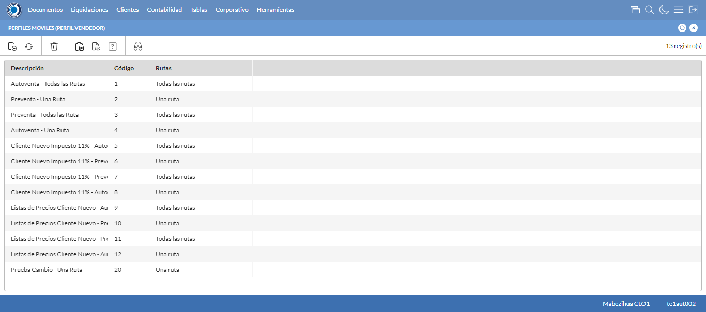
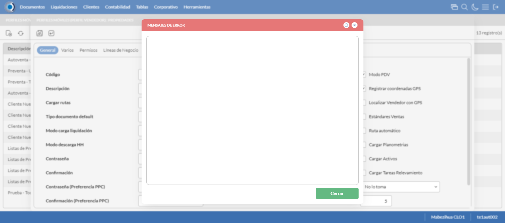
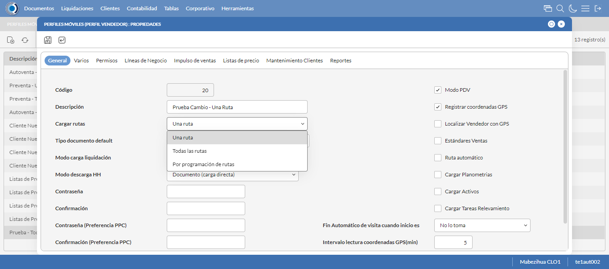

Desarrollado por : Area de Testing PWST
Fecha y hora de inicio : 2023-01-05 14:13:13
Duracion : 0:02:58.250130
Resultado : Total 8，Correctos 7 ，Errores 1 ，Taza de resultado 87.50%
Resumen 87.50% Errores 1 Fallidos 0 Correctos 7 Test realizados 8
| Caso de Prueba | Total | Correctos | Fallido | Error | Detalles | Captura del error |
| PerfilesMoviles.Test: Escenario 1 de Perfiles Moviles | 8 | 7 | 0 | 1 | Detalles | |
test |
ft1_1: 2023-01-05 14:13:14,220 - root - INFO - Se abre el chrome
2023-01-05 14:13:16,016 - root - INFO - Entra a la URL
2023-01-05 14:13:16,135 - root - INFO - Maximiza la pantalla
Traceback (most recent call last):
File "C:\Users\gerar\AppData\Local\Programs\Python\Python311\Lib\site-packages\selenium\webdriver\remote\switch_to.py", line 88, in frame
frame_reference = self._driver.find_element(By.ID, frame_reference)
^^^^^^^^^^^^^^^^^^^^^^^^^^^^^^^^^^^^^^^^^^^^^^^^^
File "C:\Users\gerar\AppData\Local\Programs\Python\Python311\Lib\site-packages\selenium\webdriver\remote\webdriver.py", line 861, in find_element
return self.execute(Command.FIND_ELEMENT, {"using": by, "value": value})["value"]
^^^^^^^^^^^^^^^^^^^^^^^^^^^^^^^^^^^^^^^^^^^^^^^^^^^^^^^^^^^^^^^^^
File "C:\Users\gerar\AppData\Local\Programs\Python\Python311\Lib\site-packages\selenium\webdriver\remote\webdriver.py", line 444, in execute
self.error_handler.check_response(response)
File "C:\Users\gerar\AppData\Local\Programs\Python\Python311\Lib\site-packages\selenium\webdriver\remote\errorhandler.py", line 249, in check_response
raise exception_class(message, screen, stacktrace)
selenium.common.exceptions.NoSuchElementException: Message: no such element: Unable to locate element: {"method":"css selector","selector":"[id="mainFrame"]"}
(Session info: chrome=108.0.5359.125)
Stacktrace:
Backtrace:
(No symbol) [0x007DF243]
(No symbol) [0x00767FD1]
(No symbol) [0x0065D04D]
(No symbol) [0x0068C0B0]
(No symbol) [0x0068C22B]
(No symbol) [0x006BE612]
(No symbol) [0x006A85D4]
(No symbol) [0x006BC9EB]
(No symbol) [0x006A8386]
(No symbol) [0x0068163C]
(No symbol) [0x0068269D]
GetHandleVerifier [0x00A79A22+2655074]
GetHandleVerifier [0x00A6CA24+2601828]
GetHandleVerifier [0x00888C0A+619850]
GetHandleVerifier [0x00887830+614768]
(No symbol) [0x007705FC]
(No symbol) [0x00775968]
(No symbol) [0x00775A55]
(No symbol) [0x0078051B]
BaseThreadInitThunk [0x76347D69+25]
RtlInitializeExceptionChain [0x7731BB9B+107]
RtlClearBits [0x7731BB1F+191]
During handling of the above exception, another exception occurred:
Traceback (most recent call last):
File "C:\Users\gerar\AppData\Local\Programs\Python\Python311\Lib\site-packages\selenium\webdriver\remote\switch_to.py", line 91, in frame
frame_reference = self._driver.find_element(By.NAME, frame_reference)
^^^^^^^^^^^^^^^^^^^^^^^^^^^^^^^^^^^^^^^^^^^^^^^^^^^
File "C:\Users\gerar\AppData\Local\Programs\Python\Python311\Lib\site-packages\selenium\webdriver\remote\webdriver.py", line 861, in find_element
return self.execute(Command.FIND_ELEMENT, {"using": by, "value": value})["value"]
^^^^^^^^^^^^^^^^^^^^^^^^^^^^^^^^^^^^^^^^^^^^^^^^^^^^^^^^^^^^^^^^^
File "C:\Users\gerar\AppData\Local\Programs\Python\Python311\Lib\site-packages\selenium\webdriver\remote\webdriver.py", line 444, in execute
self.error_handler.check_response(response)
File "C:\Users\gerar\AppData\Local\Programs\Python\Python311\Lib\site-packages\selenium\webdriver\remote\errorhandler.py", line 249, in check_response
raise exception_class(message, screen, stacktrace)
selenium.common.exceptions.NoSuchElementException: Message: no such element: Unable to locate element: {"method":"css selector","selector":"[name="mainFrame"]"}
(Session info: chrome=108.0.5359.125)
Stacktrace:
Backtrace:
(No symbol) [0x007DF243]
(No symbol) [0x00767FD1]
(No symbol) [0x0065D04D]
(No symbol) [0x0068C0B0]
(No symbol) [0x0068C22B]
(No symbol) [0x006BE612]
(No symbol) [0x006A85D4]
(No symbol) [0x006BC9EB]
(No symbol) [0x006A8386]
(No symbol) [0x0068163C]
(No symbol) [0x0068269D]
GetHandleVerifier [0x00A79A22+2655074]
GetHandleVerifier [0x00A6CA24+2601828]
GetHandleVerifier [0x00888C0A+619850]
GetHandleVerifier [0x00887830+614768]
(No symbol) [0x007705FC]
(No symbol) [0x00775968]
(No symbol) [0x00775A55]
(No symbol) [0x0078051B]
BaseThreadInitThunk [0x76347D69+25]
RtlInitializeExceptionChain [0x7731BB9B+107]
RtlClearBits [0x7731BB1F+191]
During handling of the above exception, another exception occurred:
Traceback (most recent call last):
File "C:\xampp\htdocs\versiones\automatizaciones\AutoPWST\01PM\testCase\PerfilesMoviles.py", line 30, in test
self.driver.switch_to.frame("mainFrame")
File "C:\Users\gerar\AppData\Local\Programs\Python\Python311\Lib\site-packages\selenium\webdriver\remote\switch_to.py", line 93, in frame
raise NoSuchFrameException(frame_reference)
selenium.common.exceptions.NoSuchFrameException: Message: mainFrame
|
|
||||
test_000: Ingresa a la base de datos |
pt1_2: 2023-01-05 14:13:19,213 - root - INFO - Escribe el usuario
2023-01-05 14:13:19,279 - root - INFO - Escribe la contraseña
2023-01-05 14:13:19,342 - root - INFO - Se dio clic en el boton ingresar
2023-01-05 14:13:24,395 - root - INFO - Ejecutar Enterprise
2023-01-05 14:13:28,437 - root - INFO - Cambia entre pestañas
|
|
||||
test_001: Abre menu y ejecuta pantalla |
pt1_3: 2023-01-05 14:13:51,587 - root - INFO - Abre la pantalla de Perfiles Moviles
2023-01-05 14:13:53,164 - root - INFO - La pantalla ejecutada es Perfiles Moviles
2023-01-05 14:13:53,164 - root - INFO - Captura: C:\xampp\htdocs\versiones\automatizaciones\AutoPWST\01PM\report\img screen：20230105_14_13_53.png
2023-01-05 14:13:53,850 - root - INFO - Se da clic en el registro creado, para proceder a eliminarlo.
2023-01-05 14:13:56,955 - root - INFO - Se hace el cambio de pestaña Permisos para continuar con la eliminación del registro
2023-01-05 14:13:58,030 - root - INFO - Se da clic en el primer registro de Permisos, para proceder a eliminarlo.
2023-01-05 14:13:58,074 - root - INFO - Se presiona el boton 'Eliminar de Permiso', para eliminar el segundo registro.
2023-01-05 14:13:59,641 - root - INFO - Se da clic en el segundo registro de Permisos, para proceder a Eliminarlo.
2023-01-05 14:13:59,674 - root - INFO - Se presiona el boton 'Eliminar de Permiso', para eliminar el segundo registro.
2023-01-05 14:14:00,728 - root - INFO - Se hace el cambio a la pestaña Lineas de Negocio para continuar con la eliminación del registro
2023-01-05 14:14:01,792 - root - INFO - Se da clic en el primer registro de Linea de Negocio, para proceder a Eliminarlo.
2023-01-05 14:14:01,836 - root - INFO - Se presiona el boton 'Eliminar de Linea de Negocio', para eliminar el primer registro.
2023-01-05 14:14:03,407 - root - INFO - Se da clic en el segundo registro Linea de negocio, para proceder a Eliminarlo.
2023-01-05 14:14:03,443 - root - INFO - Se presiona el boton 'Eliminar de Linea de Negocio', para eliminar el segundo registro.
2023-01-05 14:14:05,010 - root - INFO - Se da clic en el tercer registro Lineas de Negocio, para proceder a Eliminarlo.
2023-01-05 14:14:05,051 - root - INFO - Se presiona el boton 'Eliminar de Linea de Negocio', para eliminar el tercer registro.
2023-01-05 14:14:06,097 - root - INFO - Se hace el cambio de pestaña Impulso Ventas para continuar con la modificación del registro
2023-01-05 14:14:07,666 - root - INFO - Se da clic en el registro creado, para proceder a modificarlo.
2023-01-05 14:14:07,720 - root - INFO - Se presiona el boton 'Eliminar de Impulso Ventas', para eliminar el primer registro.
2023-01-05 14:14:09,274 - root - INFO - Se da clic en el registro creado, para proceder a modificarlo.
2023-01-05 14:14:09,307 - root - INFO - Se presiona el boton 'Eliminar de Impulso Ventas', para eliminar el segundo registro.
2023-01-05 14:14:10,870 - root - INFO - Se da clic en el registro creado, para proceder a modificarlo.
2023-01-05 14:14:10,906 - root - INFO - Se presiona el boton 'Eliminar de Impulso Ventas', para eliminar el tercer registro.
2023-01-05 14:14:12,474 - root - INFO - Se da clic en el registro creado, para proceder a modificarlo.
2023-01-05 14:14:12,518 - root - INFO - Se presiona el boton 'Eliminar de Impulso Ventas', para eliminar el cuarto registro.
2023-01-05 14:14:14,071 - root - INFO - Se da clic en el registro creado, para proceder a modificarlo.
2023-01-05 14:14:14,110 - root - INFO - Se presiona el boton 'Eliminar de Impulso Ventas', para eliminar el quinto registro.
2023-01-05 14:14:15,162 - root - INFO - Se hace el cambio a la pestaña Mantenimiento Clientes para continuar con la eliminación del registro
2023-01-05 14:14:16,243 - root - INFO - Se dió click en el checkbox Clasificación 1
2023-01-05 14:14:16,430 - root - INFO - Se dió click en el checkbox Clasificación 2
2023-01-05 14:14:16,578 - root - INFO - Se dió click en el checkbox Clasificación 3
2023-01-05 14:14:16,758 - root - INFO - Se dió click en el checkbox Colonia
2023-01-05 14:14:16,918 - root - INFO - Se dió click en el checkbox Codigo Postal
2023-01-05 14:14:17,097 - root - INFO - Se dió click en el checkbox Direccion
2023-01-05 14:14:17,293 - root - INFO - Se dió click en el checkbox Entorno PDV
2023-01-05 14:14:17,472 - root - INFO - Se dió click en el checkbox Esquina 1
2023-01-05 14:14:17,677 - root - INFO - Se dió click en el checkbox Esquina 2
2023-01-05 14:14:17,879 - root - INFO - Se dió click en el checkbox Paises
2023-01-05 14:14:18,072 - root - INFO - Se dió click en el checkbox Departamento
2023-01-05 14:14:18,214 - root - INFO - Se dió click en el checkbox Localidad
2023-01-05 14:14:18,417 - root - INFO - Se da clic en el boton Guardar; se debe modificar la informacion del registro.
2023-01-05 14:14:18,972 - root - INFO - Se da clic en el registro creado, para proceder a eliminarlo.
2023-01-05 14:14:19,457 - root - INFO - Se presiona el boton 'Eliminar', para eliminar el registro.
2023-01-05 14:14:20,022 - root - INFO - Se confirma el eliminado del registro
2023-01-05 14:14:20,322 - root - INFO - Se presiona el boton 'Refrescar', para crear un nuevo registro igual al anterior.
2023-01-05 14:14:22,376 - root - INFO - Se presiona el boton 'Nuevo', para crear un nuevo registro.
|
 | ||||
test_002: Abre la ventana de nuevo y crear un registro |
pt1_4: 2023-01-05 14:14:24,439 - root - INFO - Se abrio la pantalla para el ingreso de un registro nuevo.
2023-01-05 14:14:24,482 - root - INFO - Ingresa el codigo del nuevo registro
2023-01-05 14:14:24,567 - root - INFO - Ingresa la Descripcion del nuevo registro
2023-01-05 14:14:24,905 - root - INFO - Se selecciono la opción Todas las Rutas
2023-01-05 14:14:24,969 - root - INFO - Ingresa el Tipo documento default del nuevo registro
2023-01-05 14:14:25,309 - root - INFO - Se selecciono la opción Normal
2023-01-05 14:14:26,085 - root - INFO - Se selecciono el registro de Modo carga liquidación
2023-01-05 14:14:26,750 - root - INFO - Se selecciono la opción Documento (carga directa)
2023-01-05 14:14:26,801 - root - INFO - Se dió click en el checkbox Modo PDV
2023-01-05 14:14:26,851 - root - INFO - Se dió click en el checkbox Registrar coordenadas GPS
2023-01-05 14:14:27,193 - root - INFO - Se dió click en la opción No lo toma
2023-01-05 14:14:27,253 - root - INFO - Ingresa el Intervalo lectura coordenadas GPS(min) del nuevo registro
2023-01-05 14:14:27,253 - root - INFO - Captura: C:\xampp\htdocs\versiones\automatizaciones\AutoPWST\01PM\report\img screen：20230105_14_14_27.png
2023-01-05 14:14:29,438 - root - INFO - Se hace el cambio de pestaña Varios para continuar con el registro nuevo
2023-01-05 14:14:29,491 - root - INFO - Se dió click en el checkbox Cargar resumen de cuentas únicamente del vendedor de la ruta
2023-01-05 14:14:29,547 - root - INFO - Se dió click en el checkbox Verificar límite de crédito
2023-01-05 14:14:29,594 - root - INFO - Se dió click en el checkbox Verificar opción 'guardar como' del tipo de documento
2023-01-05 14:14:29,643 - root - INFO - Se dió click en el checkbox Permitir Pagos
2023-01-05 14:14:30,703 - root - INFO - Se dió click en el botón espacio para mover la pantalla hacía abajo
2023-01-05 14:14:32,086 - root - INFO - Se selecciono el registro de Disco de Datos
2023-01-05 14:14:32,421 - root - INFO - Se dió click en la opción Autoventa
2023-01-05 14:14:32,472 - root - INFO - Se dió click en el checkbox Enviar documentos de inmediato al servidor.
2023-01-05 14:14:32,522 - root - INFO - Se hace el cambio a la pestaña Permisos para continuar con el registro nuevo
2023-01-05 14:14:33,092 - root - INFO - Se presiona el boton 'Nuevo de la pestaña Permiso' , para crear un nuevo registro.
2023-01-05 14:14:34,481 - root - INFO - Se dió click en la opción Inihibir Georeferenciación
2023-01-05 14:14:34,533 - root - INFO - Se presiona el boton 'Guardar de la pestaña Permiso', para guardar el registro.
2023-01-05 14:14:35,271 - root - INFO - Se presiona el boton 'Nuevo de la pestaña Permiso' , para crear un nuevo registro.
2023-01-05 14:14:36,133 - root - INFO - Se dió click en la opción Anular Documentos
2023-01-05 14:14:36,187 - root - INFO - Se presiona el boton 'Guardar de la pestaña Permiso', para guardar el registro.
2023-01-05 14:14:36,589 - root - INFO - Se hace el cambio a la pestaña Lineas de Negocio para continuar con el registro nuevo
2023-01-05 14:14:37,152 - root - INFO - Se presiona el boton 'Nuevo de la pestaña Permiso' , para crear un nuevo registro.
2023-01-05 14:14:38,536 - root - INFO - Se selecciono el registro de Linea de negocio
2023-01-05 14:14:38,838 - root - INFO - Se presiona el boton 'Guardar de la pestaña Linea de Negocio', para guardar el registro.
2023-01-05 14:14:39,269 - root - INFO - Se presiona el boton 'Nuevo de la pestaña Permiso' , para crear un nuevo registro.
2023-01-05 14:14:40,654 - root - INFO - Se selecciono el registro de Linea de negocio
2023-01-05 14:14:40,990 - root - INFO - Se presiona el boton 'Guardar de la pestaña Linea de Negocio', para guardar el registro.
2023-01-05 14:14:41,480 - root - INFO - Se presiona el boton 'Nuevo de la pestaña Permiso' , para crear un nuevo registro.
2023-01-05 14:14:42,869 - root - INFO - Se selecciono el registro de Linea de negocio
2023-01-05 14:14:43,436 - root - INFO - Se presiona el boton 'Guardar de la pestaña Linea de Negocio', para guardar el registro.
2023-01-05 14:14:44,365 - root - INFO - Se hace el cambio a la pestaña Impulso Ventas para continuar con el registro nuevo
2023-01-05 14:14:45,453 - root - INFO - Se presiona el boton 'Nuevo de la pestaña Impulso de Ventas' , para crear un nuevo registro.
2023-01-05 14:14:46,021 - root - INFO - Ingresa el Articulo del nuevo registro
2023-01-05 14:14:48,903 - root - INFO - Se presiona el boton 'Guardar de la pestaña Impulso de Ventas', para guardar el registro.
2023-01-05 14:14:50,944 - root - INFO - Se presiona el boton 'Nuevo de la pestaña Impulso de Ventas' , para crear un nuevo registro.
2023-01-05 14:14:51,534 - root - INFO - Ingresa el Articulo del nuevo registro
2023-01-05 14:14:53,625 - root - INFO - Se presiona el boton 'Guardar de la pestaña Impulso de Ventas', para guardar el registro.
2023-01-05 14:14:55,668 - root - INFO - Se presiona el boton 'Nuevo de la pestaña Impulso de Ventas' , para crear un nuevo registro.
2023-01-05 14:14:56,237 - root - INFO - Ingresa el Articulo del nuevo registro
2023-01-05 14:14:58,331 - root - INFO - Se presiona el boton 'Guardar de la pestaña Impulso de Ventas', para guardar el registro.
2023-01-05 14:15:00,371 - root - INFO - Se presiona el boton 'Nuevo de la pestaña Impulso de Ventas' , para crear un nuevo registro.
2023-01-05 14:15:01,460 - root - INFO - Ingresa el Articulo del nuevo registro
2023-01-05 14:15:03,556 - root - INFO - Se presiona el boton 'Guardar de la pestaña Impulso de Ventas', para guardar el registro.
2023-01-05 14:15:05,596 - root - INFO - Se presiona el boton 'Nuevo de la pestaña Impulso de Ventas' , para crear un nuevo registro.
2023-01-05 14:15:06,174 - root - INFO - Ingresa el Articulo del nuevo registro
2023-01-05 14:15:08,285 - root - INFO - Se presiona el boton 'Guardar de la pestaña Impulso de Ventas', para guardar el registro.
2023-01-05 14:15:10,337 - root - INFO - Se hace el cambio a la pestaña Mantenimiento Clientes para continuar con el registro nuevo
2023-01-05 14:15:11,490 - root - INFO - Se dió click en el checkbox Permiso agregar nuevos clientes
2023-01-05 14:15:11,565 - root - INFO - Se dió click en el checkbox Permiso modificar clientes existentes
2023-01-05 14:15:12,508 - root - INFO - Se selecciono el registro de Ruta Referencia
2023-01-05 14:15:12,887 - root - INFO - Se dió click en el checkbox Clasificación 1
2023-01-05 14:15:13,074 - root - INFO - Se dió click en el checkbox Clasificación 2
2023-01-05 14:15:13,219 - root - INFO - Se dió click en el checkbox Clasificación 3
2023-01-05 14:15:13,408 - root - INFO - Se dió click en el checkbox Colonia
2023-01-05 14:15:13,585 - root - INFO - Se dió click en el checkbox Codigo Postal
2023-01-05 14:15:13,865 - root - INFO - Se dió click en el checkbox Direccion
2023-01-05 14:15:14,122 - root - INFO - Se dió click en el checkbox Entorno PDV
2023-01-05 14:15:14,325 - root - INFO - Se dió click en el checkbox Esquina 1
2023-01-05 14:15:14,520 - root - INFO - Se dió click en el checkbox Esquina 2
2023-01-05 14:15:14,663 - root - INFO - Se dió click en el checkbox Paises
2023-01-05 14:15:15,172 - root - INFO - Se dió click en el checkbox Departamento
2023-01-05 14:15:15,375 - root - INFO - Se dió click en el checkbox Localidad
2023-01-05 14:15:15,558 - root - INFO - Se da clic en el boton Guardar; se debe crear un nuevo registro.
|

|
||||
test_003: Repite el Registro |
pt1_5: 2023-01-05 14:15:16,242 - root - INFO - Se presiona el boton 'Refrescar', para crear un nuevo registro igual al anterior.
2023-01-05 14:15:18,296 - root - INFO - Se presiona el boton 'Nuevo', para crear un nuevo registro igual al anterior.
2023-01-05 14:15:19,345 - root - INFO - Se abrio la pantalla para el ingreso de un registro nuevo.
2023-01-05 14:15:19,401 - root - INFO - Ingresa el codigo del nuevo registro
2023-01-05 14:15:19,509 - root - INFO - Ingresa la Descripcion del nuevo registro
2023-01-05 14:15:19,850 - root - INFO - Se selecciono la opción Todas las Rutas
2023-01-05 14:15:19,918 - root - INFO - Ingresa el Tipo documento default del nuevo registro
2023-01-05 14:15:20,266 - root - INFO - Se selecciono la opción Normal
2023-01-05 14:15:20,873 - root - INFO - Se selecciono el registro de Modo carga liquidación
2023-01-05 14:15:21,212 - root - INFO - Se selecciono la opción Documento (carga directa)
2023-01-05 14:15:21,269 - root - INFO - Se dió click en el checkbox Modo PDV
2023-01-05 14:15:21,323 - root - INFO - Se dió click en el checkbox Registrar coordenadas GPS
2023-01-05 14:15:21,679 - root - INFO - Se dió click en la opción No lo toma
2023-01-05 14:15:21,743 - root - INFO - Ingresa el Intervalo lectura coordenadas GPS(min) del nuevo registro
2023-01-05 14:15:23,801 - root - INFO - Se da clic en el boton Guardar; NO se debe crear un nuevo registro.
2023-01-05 14:15:25,879 - root - INFO - Se da clic en el boton del mensaje de registro duplicado
2023-01-05 14:15:27,882 - root - INFO - Captura: C:\xampp\htdocs\versiones\automatizaciones\AutoPWST\01PM\report\img screen：20230105_14_15_27.png
2023-01-05 14:15:28,086 - root - INFO - Se presiona el boton 'Cerrar', para cerrar el mensaje de duplicidad de llave primaria
2023-01-05 14:15:28,834 - root - INFO - Se presiona el boton 'Cerrar', para cerrar la ventana
|
 | ||||
test_004: Modificar el registro |
pt1_6: 2023-01-05 14:15:29,757 - root - INFO - Se presiona el boton 'Refrescar', para proceder a modificar el registro.
2023-01-05 14:15:32,316 - root - INFO - Se da clic en el registro creado, para proceder a modificarlo.
2023-01-05 14:15:33,452 - root - INFO - Se modifica el contenido del campo Observaciones 1
2023-01-05 14:15:33,786 - root - INFO - Se selecciono la opción Una Ruta
2023-01-05 14:15:33,786 - root - INFO - Captura: C:\xampp\htdocs\versiones\automatizaciones\AutoPWST\01PM\report\img screen：20230105_14_15_33.png
2023-01-05 14:15:33,943 - root - INFO - Se hace el cambio de pestaña Permisos para continuar con la modificación del registro
2023-01-05 14:15:34,248 - root - INFO - Se hace el cambio a la pestaña Lineas de Negocio para continuar con la modificación del registro
2023-01-05 14:15:34,545 - root - INFO - Se da clic en el boton Guardar; se debe modificar la informacion del registro.
|
 | ||||
test_005: Eliminar el registro creado |
pt1_7: 2023-01-05 14:15:36,579 - root - INFO - Se presiona el boton 'Refrescar', para proceder a eliminar el registro.
2023-01-05 14:15:39,147 - root - INFO - Se da clic en el registro creado, para proceder a eliminarlo.
2023-01-05 14:15:39,726 - root - INFO - Se hace el cambio de pestaña Permisos para continuar con la eliminación del registro
2023-01-05 14:15:40,801 - root - INFO - Se da clic en el primer registro de Permisos, para proceder a eliminarlo.
2023-01-05 14:15:40,848 - root - INFO - Se presiona el boton 'Eliminar de Permiso', para eliminar el segundo registro.
2023-01-05 14:15:42,417 - root - INFO - Se da clic en el segundo registro de Permisos, para proceder a Eliminarlo.
2023-01-05 14:15:42,446 - root - INFO - Se presiona el boton 'Eliminar de Permiso', para eliminar el segundo registro.
2023-01-05 14:15:43,502 - root - INFO - Se hace el cambio a la pestaña Lineas de Negocio para continuar con la eliminación del registro
2023-01-05 14:15:44,564 - root - INFO - Se da clic en el primer registro de Linea de Negocio, para proceder a Eliminarlo.
2023-01-05 14:15:44,609 - root - INFO - Se presiona el boton 'Eliminar de Linea de Negocio', para eliminar el primer registro.
2023-01-05 14:15:46,183 - root - INFO - Se da clic en el segundo registro Linea de negocio, para proceder a Eliminarlo.
2023-01-05 14:15:46,215 - root - INFO - Se presiona el boton 'Eliminar de Linea de Negocio', para eliminar el segundo registro.
2023-01-05 14:15:47,810 - root - INFO - Se da clic en el tercer registro Lineas de Negocio, para proceder a Eliminarlo.
2023-01-05 14:15:47,851 - root - INFO - Se presiona el boton 'Eliminar de Linea de Negocio', para eliminar el tercer registro.
2023-01-05 14:15:48,902 - root - INFO - Se hace el cambio de pestaña Impulso Ventas para continuar con la modificación del registro
2023-01-05 14:15:50,471 - root - INFO - Se da clic en el registro creado, para proceder a modificarlo.
2023-01-05 14:15:50,514 - root - INFO - Se presiona el boton 'Eliminar de Impulso Ventas', para eliminar el primer registro.
2023-01-05 14:15:52,070 - root - INFO - Se da clic en el registro creado, para proceder a modificarlo.
2023-01-05 14:15:52,107 - root - INFO - Se presiona el boton 'Eliminar de Impulso Ventas', para eliminar el segundo registro.
2023-01-05 14:15:53,669 - root - INFO - Se da clic en el registro creado, para proceder a modificarlo.
2023-01-05 14:15:53,715 - root - INFO - Se presiona el boton 'Eliminar de Impulso Ventas', para eliminar el tercer registro.
2023-01-05 14:15:55,269 - root - INFO - Se da clic en el registro creado, para proceder a modificarlo.
2023-01-05 14:15:55,308 - root - INFO - Se presiona el boton 'Eliminar de Impulso Ventas', para eliminar el cuarto registro.
2023-01-05 14:15:56,874 - root - INFO - Se da clic en el registro creado, para proceder a modificarlo.
2023-01-05 14:15:56,908 - root - INFO - Se presiona el boton 'Eliminar de Impulso Ventas', para eliminar el quinto registro.
2023-01-05 14:15:57,973 - root - INFO - Se hace el cambio a la pestaña Mantenimiento Clientes para continuar con la eliminación del registro
2023-01-05 14:15:58,566 - root - INFO - Se dió click en el checkbox Clasificación 1
2023-01-05 14:15:58,711 - root - INFO - Se dió click en el checkbox Clasificación 2
2023-01-05 14:15:58,891 - root - INFO - Se dió click en el checkbox Clasificación 3
2023-01-05 14:15:59,654 - root - INFO - Se dió click en el checkbox Colonia
2023-01-05 14:15:59,827 - root - INFO - Se dió click en el checkbox Codigo Postal
2023-01-05 14:15:59,994 - root - INFO - Se dió click en el checkbox Direccion
2023-01-05 14:16:00,146 - root - INFO - Se dió click en el checkbox Entorno PDV
2023-01-05 14:16:00,324 - root - INFO - Se dió click en el checkbox Esquina 1
2023-01-05 14:16:00,525 - root - INFO - Se dió click en el checkbox Esquina 2
2023-01-05 14:16:00,727 - root - INFO - Se dió click en el checkbox Paises
2023-01-05 14:16:00,874 - root - INFO - Se dió click en el checkbox Departamento
2023-01-05 14:16:01,072 - root - INFO - Se dió click en el checkbox Localidad
2023-01-05 14:16:01,275 - root - INFO - Se da clic en el boton Guardar; se debe modificar la informacion del registro.
2023-01-05 14:16:01,860 - root - INFO - Se da clic en el registro creado, para proceder a eliminarlo.
2023-01-05 14:16:02,473 - root - INFO - Se presiona el boton 'Eliminar', para eliminar el registro.
2023-01-05 14:16:04,474 - root - INFO - Captura: C:\xampp\htdocs\versiones\automatizaciones\AutoPWST\01PM\report\img screen：20230105_14_16_04.png
2023-01-05 14:16:04,607 - root - INFO - Se confirma el eliminado del registro
2023-01-05 14:16:04,966 - root - INFO - Se presiona el boton 'Refrescar', para verificar si el registro ha sido eliminado.
2023-01-05 14:16:07,019 - root - INFO - Se presiona el boton 'Cerrar', para cerrar la pantalla de Perfiles Moviles.
|

|
||||
test_006: Cerrar_Navegador |
pt1_8: 2023-01-05 14:16:11,339 - root - INFO - Se cierra chrome
|
|
||||
| Caso de prueba | 8 | 7 | 0 | 1 | Taza de resultado：87.50% | |